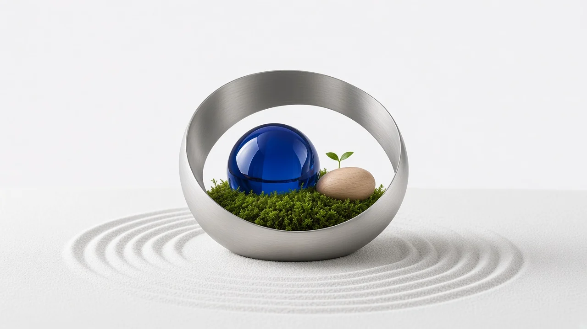

แพลตฟอร์ม · Factory Pro
Factory Pro
เชื่อมการผลิต คลังสินค้า การบำรุงรักษา และการมองเห็นด้วย AI ไว้ในแพลตฟอร์มเดียว เพื่อเห็นภาพรวมสายการผลิต คลังสินค้า และสถานะเครื่องจักร
ที่มา · artroninnovative.co.th และ factorypro.ai
02 / Innovative
PdM Box, ModuRa-01 และแพลตฟอร์ม Factory Pro — ตามข้อมูลผลิตภัณฑ์ที่มีอยู่
รายละเอียดต่อไปนี้มาจากหน้าเว็บเดิมและข้อมูลผลิตภัณฑ์ที่มีอยู่ ไม่เพิ่มสเปกหรือตัวเลขใหม่
แพลตฟอร์ม · Factory Pro
เชื่อมการผลิต คลังสินค้า การบำรุงรักษา และการมองเห็นด้วย AI ไว้ในแพลตฟอร์มเดียว เพื่อเห็นภาพรวมสายการผลิต คลังสินค้า และสถานะเครื่องจักร
ที่มา · artroninnovative.co.th และ factorypro.ai
โมดูลใน Factory Pro
คำอธิบายสั้นของแต่ละโมดูลใช้ตามที่มีในหน้าเว็บชุดเซน และลิงก์ไปที่ factorypro.ai
Official Partner

Official Partner with SCG
ฮาร์ดแวร์ · บำรุงรักษาเชิงพยากรณ์
ระบบบำรุงรักษาเชิงพยากรณ์ที่เชื่อมกับ Factory PRO · Official Partner with SCG
ติดตั้งระบบได้ภายใน 30 นาที ตามข้อมูลผลิตภัณฑ์บน artroninnovative.co.th
ตามข้อมูลผลิตภัณฑ์ · artroninnovative.co.th
ฮาร์ดแวร์ · LoRaWAN
แปลง RS-485 สู่ LoRaWAN ส่งข้อมูลไร้สายระยะไกล ตัวเครื่องมาตรฐาน IP68 แบตเตอรี่ใช้งานได้นานกว่าหนึ่งปีตามข้อมูลผลิตภัณฑ์ เหมาะกับการติดตามสภาพแวดล้อม ทั้งในงานเกษตรและงานที่ต้องการเครือข่ายเซนเซอร์ระยะไกล
ตามข้อมูลผลิตภัณฑ์ · artroninnovative.co.th
